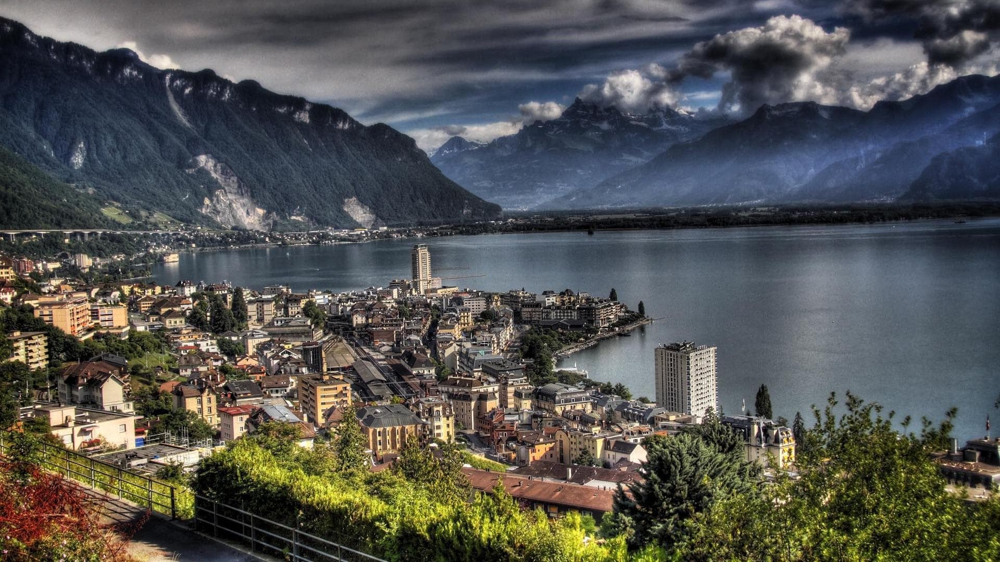
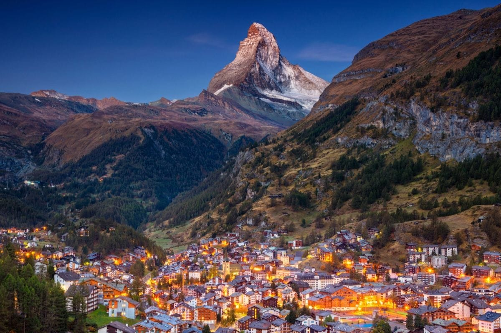
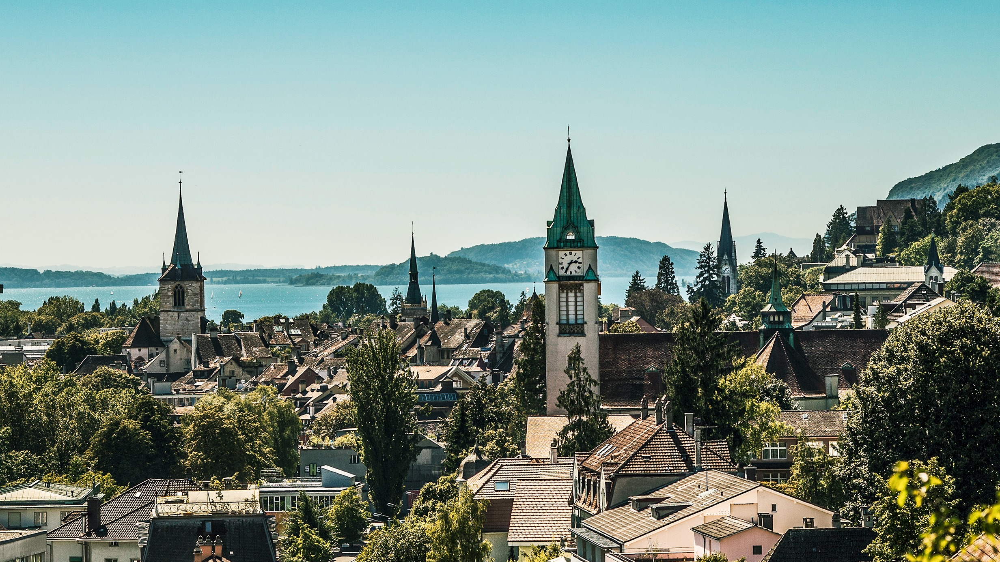

Explore Switzerland
Geneva
Geneva is truly a hidden gem in Switzerland. Surrounded by the Alps,
the city is the definition of the “city of peace.” There are so many different things
to do in Geneva so it can be hard to decide just what to see, what to do,
and where to stay if you’ve never visited before, so I've compiled my ultimate guide
to Geneva here for your next trip to Switzerland!
Zermatt,
unique view to
the Alps

when he conquered the Matterhorn, Switzerland’s highest peak, in the mid-19th century.
Zermatt provides incomparable views of the Alps, and the river Matter Vispa trickling
through it only adds to the charm of this small town. There are a number of cable cars
and chair lifts for skiers, and for those who have a head for heights, the Gornergrat Bahn
– the highest open-air railway in Europe – runs to the summit of the Gornergrat.
Almost all the cars in the town are electric, making Zermatt very eco-friendly. Other culturally
significant attractions include the rock carvings and prehistoric grinding stone at Hubelwäng.
Biel/Bienne
imagination with its historical and architectural sights. The old town is the jewel in its crown, with
its narrow streets, picturesque fountains, impressive guild houses, theatres, galleries and boutique
stores selling specialities and curiosities – not to mention the restaurants, cafés and markets. All
this endows the old town with its own unique charm and authenticity. This lively area is also a popular
residential district bustling with activity